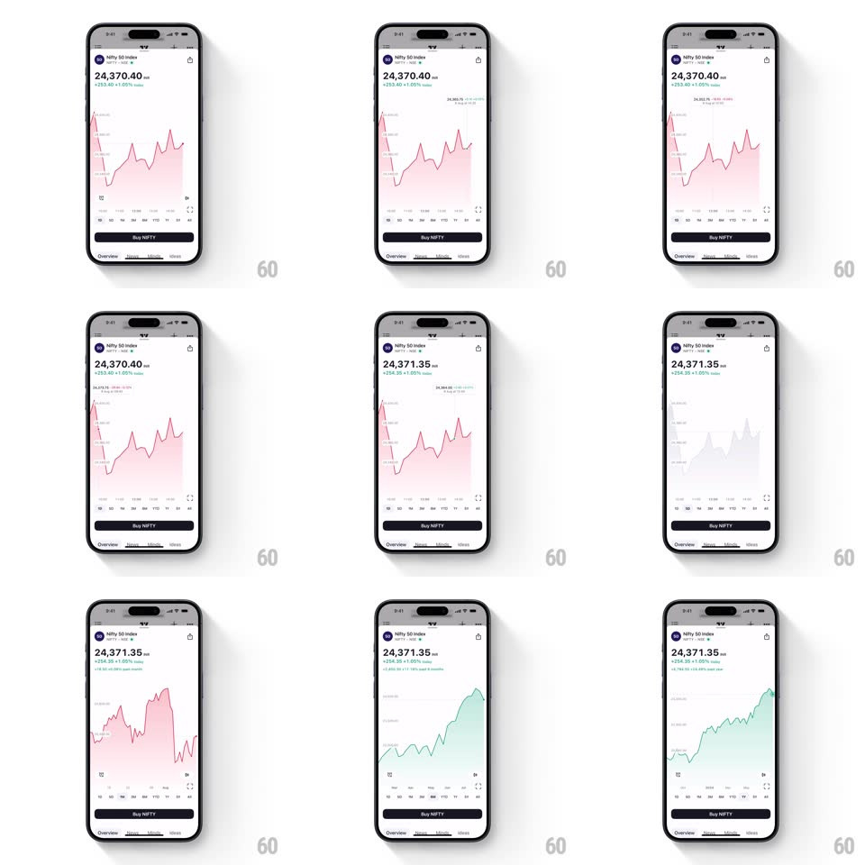

Media
Frame-by-frame

Rebuild this interaction 1:1: TradingView's mobile chart - scrub the area chart to read any point, and switch time ranges to watch the line fluidly morph and recolor between red and green.

Rebuild this interaction 1:1: TradingView's mobile chart - scrub the area chart to read any point, and switch time ranges to watch the line fluidly morph and recolor between red and green. ## Integration Integration: stack-agnostic spec - springs given as stiffness/damping, timed motions as duration + curve; map every value to your framework and animation library of choice. ## Scene A watchlist of instruments with live prices opens into a chart screen: large price readout with change (+254.35 +1.05%), a line/area chart with a soft gradient fill, a time-range row (1D 1W 1M 3M YTD 1Y All), and a black "Buy NIFTY" button pinned above the bottom tabs. ## Motion spec Pattern: scrubbing crosshair + morphing range transition. - Touch the chart: a vertical crosshair snaps to the finger (tracks 1:1 horizontally) with a dot on the line at the intersection; the header price crossfades to the scrubbed point's value and date (150ms); a light haptic ticks at each data-point boundary. - The scrubbed values pin in a small floating label near the top of the chart; lifting the finger springs the crosshair off (fade 200ms) and the price settles back to the latest value (count-back tween, 250ms). - Range switch: the line morphs point-by-point to the new series (path interpolation, 450ms, ease-in-out), the area fill crossfades color - red when the period is down, green when up (600ms color tween) - and the Y-axis labels slide to the new scale (staggered 40ms). - The selected range pill fills black (background tween 150ms); the line draws in with a left-to-right stroke reveal (700ms) on first load. - Axis gridlines are hairlines that fade during the morph (to 40%) so the reshaping line is the only moving element. ## Calibration - Price typography is tabular; the change pill colors green/red with the sign and animates with the same color tween as the fill. - Scrubbing must never hitch: precompute the path, sample nearest point, no layout work per frame. ## Reduced motion Range switches crossfade the whole chart; no scrub haptics. ## Don't miss - The area gradient fades from the line color at 30% opacity to transparent at the baseline. - "Buy NIFTY" stays fixed while the chart morphs - the trading action never dances.